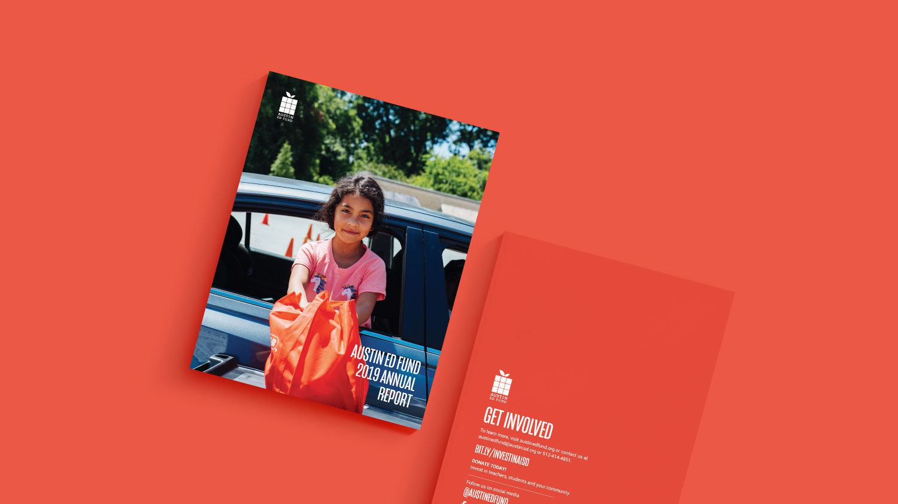
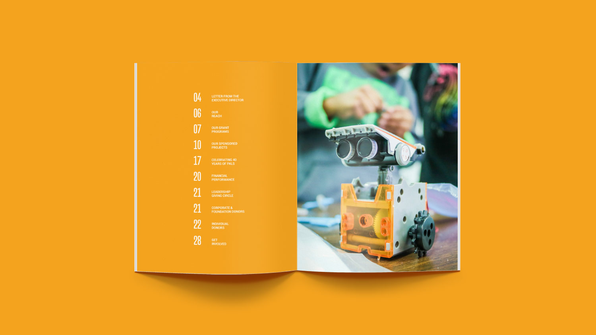
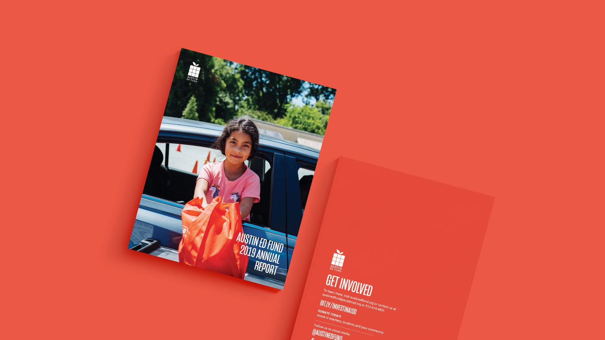
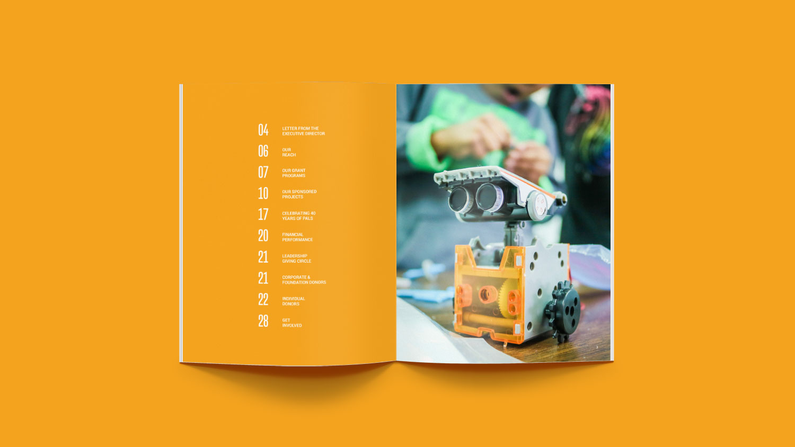
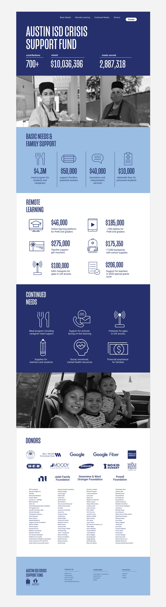
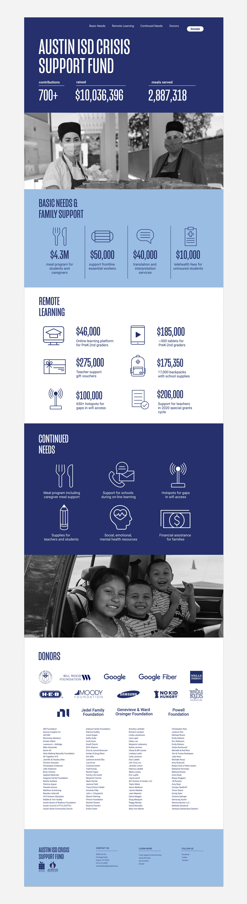

Austin Ed Fund
As a designer for Austin Ed Fund, I worked on a variety of projects including annual reports, fundraising collateral and invitation suites. In addition, I built up my web development skills by designing and building a website to showcase the money raised by the Covid relief fund.
In this role, I used design to highlight the depth and breadth of Austin Ed Fund's reach and showcase the impact it was having in the community. I explored a variety of ways to present information and developed my skills in relation to brand design, visual hierarchy, typography, iconography and color strategy.
 




 
